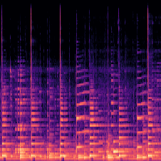
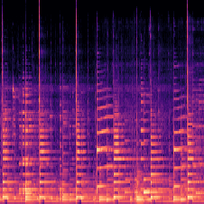
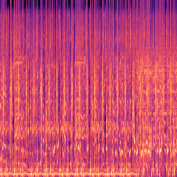
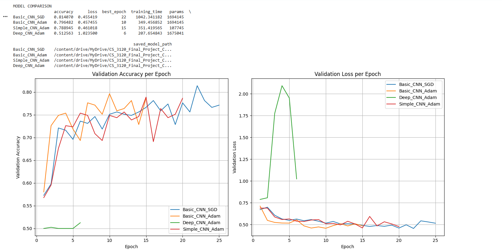
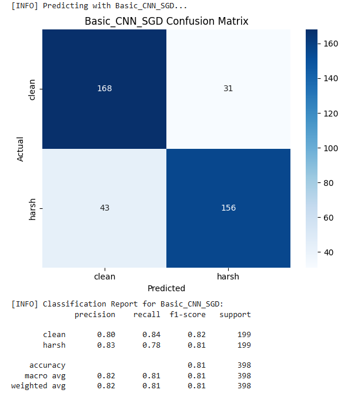

A team-built web application for task management, focused on practicing backend development with Flask,
REST APIs, SQLite, user authentication, and CRUD operations.
The system features two user roles:
Main users – create and manage sub-users, create/edit/delete tasks, view completed tasks
Sub-users – view assigned tasks and mark them as complete
Robust error handling was implemented during registration and login:
Main user dashboard with task and sub-user management options:
Sub-user views (task list and deactivated account message):
A collaborative cross-platform mobile plant care application built with React Native and Expo.
The app integrates camera access for plant identification (Pl@ntNet API) and provides AI-generated care
recommendations.
Key features and technologies practiced:
Mobile UI/UX design
Camera & image processing
Local SQLite storage
Complex state management
Asynchronous API calls
Scheduled watering reminders
AI integration
Watch this 5-minute demo of the app in action:
One feature not covered in the demo is the AI chat is restricted to plant-related topics only:
🎶 Harsh Sound Detection 🎶
This project explores using machine learning to detect audio “harshness” (distortion and excessive high-frequency
energy)
by converting audio clips into Mel spectrogram images and framing it as a binary image classification task.
Example Mel spectrograms from the same clips (clean vs. artificially harshened):
Clean

Harsh


The balanced dataset was created from the GTZAN collection (999 clean clips after removing one corrupted file).
Each clip was duplicated and modified with pydub to simulate harshness, then converted to Mel spectrograms
using librosa.
Model Results
Four CNN architectures were trained and compared:
Basic CNN (SGD)
Basic CNN (Adam)
Simple CNN (fewer parameters)
Deep CNN (extra layers + batch normalization)
Performance comparison across models:

Simpler models generalized better (~80–81% validation accuracy), while the deeper model overfit severely (~51%
accuracy).

Confusion matrix of the top-performing model showing balanced classification.
Key takeaway: Audio quality issues like harshness can be effectively detected via spectrogram image
classification,
and simpler architectures often yield more robust results than deeper ones.